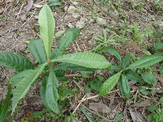
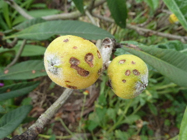
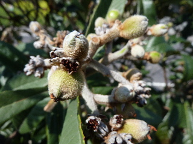
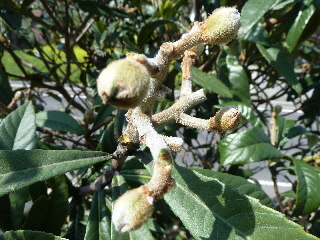
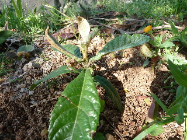
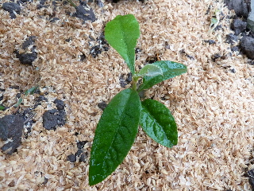
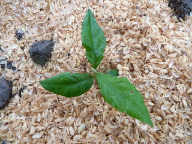
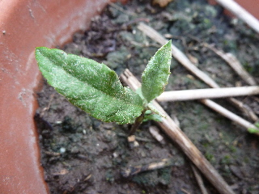
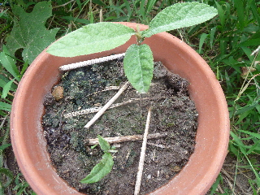

ビワがあんまり大きくなってなーい。
2013/09/28
地植えにして1年たったけど、ちょっとしか大きくなってないなー。

雑草とか周りの木で陰になってたせいかなー。
もうちょっと面倒をみれば良かったかもしれません。
2013/09/28
地植えにして1年たったけど、ちょっとしか大きくなってないなー。

雑草とか周りの木で陰になってたせいかなー。
もうちょっと面倒をみれば良かったかもしれません。
2013/06/02
ほとんどビワがこんな感じになってしまいました。

あとは大きくなるのを待つだけだったのに。
がっかりです。
来年のために、原因を調べて対策を考えなきゃ。
で、検索してみたら「日焼け」なのかな？
なかなか的確なページに出会えませんでした。
今度書籍を調べてみようと思います。
2013/04/13
いままで摘果ってしたことなかったです。
なので、いつも小さいビワを食べていました。

インターネットで摘果方法を調べて、挑戦してみました。
花の枯れたのと小さい実でごちゃごちゃです。

手でポロポロと取れるものはとって、その後ハサミでカットしました。
スッキリです。
もっと早い時期に取った方がいいかもしれませんが、寒いので嫌です。
ごん後も温かくなってから作業しようと思います。
少しでも大きいビワが食べれるのを期待してます。

これは去年種を蒔いた実生のビワです。
この1年で何センチ大きくなるかなー？
2012/09/22
ちょっと涼しくなったので、実生のビワを地植えにしました。
きっと日差しも弱くなっているし、水不足で枯れる可能性の低いでしょう。


2本とも早く大きくなって、実が付いて欲しいです。
びわを沢山食べたいです。
2012/09/08
以前にビワの種を2つ蒔いてて、1つだけ芽が出ていたんですが、2つ目が出ました。

1本目は7月末に発芽していたので、一月以上も間が空いての発芽です。

一緒に蒔いたのに、こんだけ差ができました。
両方とも早く大きくなって欲しいです。
実生のビワは実が小さいんじゃなくて、普通の大きさです。